- Generated on Wed Oct 10 2018 14:33:12 for RTNeuron by
 1.8.11
1.8.11
|
RTNeuron
3.0.0
|
RTNeuron can be used as a command line application with an embedded Python interpreter or by importing the Python module rtneuron in your own scripts.
In the first case the executable is called rtneuron, which is a Python script itself. When this script is run without arguments it will start the interpreter (IPython if available) with a preloaded environment that includes all RTNeuron classes and several helper functions.
$ rtneuron No blue config file or model list specified. Launching shell RTNeuron interactive Python shell In [1]:
When rtneuron is run with arguments that specify a circuit and several targets no shell is started by default. To start it, include --shell in the command line. For example:
$ rtneuron -b ~/Buildyard/Release/install/include/BBP/BlueConfig --target MiniColumn_0 --shell Processing 100 neurons to be added 0% 10 20 30 40 50 60 70 80 90 100% |----|----|----|----|----|----|----|----|----|----| *************************************************** Adding 100 to the scene 0% 10 20 30 40 50 60 70 80 90 100% |----|----|----|----|----|----|----|----|----|----| *************************************************** RTNeuron interactive Python shell In [1]:
The following sections will cover the basic command line options and Python API to load circuits, display simulation, camera control and record movies.
All the reference documentation is available inside the Python console using the help function. You can inspect the reference of RTNeuron classes as well as free functions and methods, e.g:
$ help(RTNeuron) $ help(Scene.addNeurons) $ help(display_circuit)
There are a few basic concepts that are used inside this guide which refer to the main objects handled by an instance of RTNeuron. There is no need to understand what these objects are if you plan to use RTNeuron only from the command line, but if you ever intend to use the Python shell it is worth getting some basic understanding.
The objects described above map to objects actually exposed by the Python/C++ library. When RTNeuron is started with something to display and the --shell option, the interpreter contains these predefined variables:
More classes are available and will be introduced in the following sections. You can always refer to the C++ or Python library reference manuals for a more technical description.
Currently, the only objects that can be displayed with rtneuron from the command line are neuron targets. To do so, the first thing that needs to be given is the BlueConfig file for that circuit. This is done by passing the path to the file with the -b command line option at start-up.
To specify the neuron targets to display there are three command line options
--target target_name [options]--neurons first_gid last_gid [options]-n gid [options]The first option loads a neuron set by its target name as present in the user.target or start.target files pointed by the BlueConfig. Regular expressiona are also accepted, as well as the special suffix %number to request a subsampling of the target to the given percentage (e.g. Column%5). The second option loads a list of neurons by GID starting at the first GID and finishing at the second one, both included. The last option allows to load a single neuron given its GID. The optional parameters for each option are explained below.
These options can be combined in any order any number of times. Note however, that when a target is added to the scene RTNeuron will refuse to add the target and will print an error if some of its neurons have already been added to the scene.
After loading, the camera will be automatically placed along the z axis in a position where all the cell somas are encompassed in vertical note( This is true as long as no other parameters affecting the camera are included. ).
If no additional options to create a specific Equalizer configuration are provided, RTNeuron will start a default configuration when started this way. The image below shows the default window with a soma column of 10K neurons loaded from the command line:
Inside the python shell the objects that can be added to scenes are:
In general, objects can be added to the scene using helper functions provided by the rtneuron module or using the Python API manually.
The function that eases the loading and displaying of neuron targets is rtneuron.display_circuit. It can used inside the Python shell either started with rtneuron without arguments or using the --shell option.
Only the first 2 arguments will be explained here, the rest will be explained in the following sections. The first argument is a path to a simulation config file that will be opened by a brain.Simulation. The second argument is a specification of neuron targets to load and display. This argument can be a target or a list of targets. A target can be either a target key or a tuple (target key, target attributes). Target keys can be of one of these types:
int: a cell GIDnumpy arrays of dtype u4, u8 or i4str: A target name or regular expression for targets from the start.target or user.target files with an optional suffix in the format %number to reduce the target to the given percentage.The target attributes can be a Python dict of (name, value) pairs or an rtneuron.AttributeMap. Possible attributes are documented in rtneuron.Scene.addNeurons and in the next section.
This function affects global variables of the rtneuron module (the variables from the interpreter that reference the same objects are also updated):
Synapses are displayed as spherical glyphs located at the presynaptic (efferent) or postsynaptic (afferent) site of the synapse.
There are two functions to add synapses to the scene:
Both functions assume that an RTNeuron instance with a valid configuration and scene is already running and will add the synapses to the scene attached to the first view. These preconditions are guaranteed if a circuit is loaded from the command line or using rtneuron.display_circuit.
The neurons and morphologies required to compute the synapse locations must have also been loaded. If a neuron is not available, an exception will be thrown. If a required morphology is not available, the synapse for which the location cannot be computed will be skipped and a warning message will be printed.
These functions load the required synapses automatically into the microcircuit.
The afferent parameter can be used to choose between showing the postsynaptic (true) or the presynaptic positions (false) of the synapses. The attribute map can be used to change the positioning and the color and radius initially assigned to the synapses (more details here).
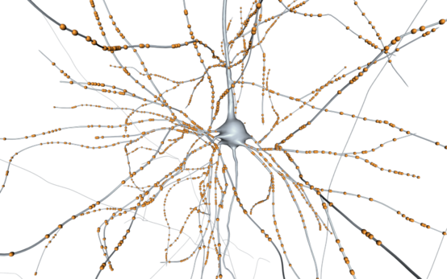
Afferent synapses of a single neuron. Added with display_synapses(neuron). |
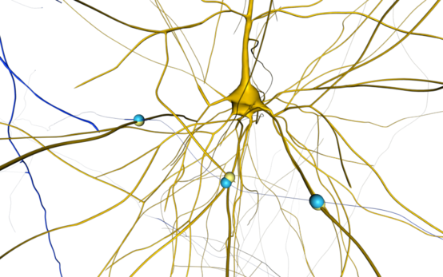
Pre and postsynaptic positions of 3 synapses shared between 2 neurons. Added with display_shared_synapses(pre, post, afferent = True|False, attributes = AttributeMap({'color': color))) |
Adding models from files to a scene is straight forward, for that reason there are not helper functions to do it.
For arbitrary meshes created by the user there is no general helper function, but there exists a function to add hexagonal prisms to the scene.
This function adds two objects to the scene passed as first argument. The first one is a hexagonal prism where the center of the bottom hexagon is placed at center, the length of the hexagon sides is radius, the height is height and the color is color. The second model is the same prism but rendered as a black wireframe on top of the first one using line_width as line width. The 3D vector for the center must be an indexable object of length 3.
The image below shows 6 of these prisms rendered with alpha-blending enabled (--alpha-blending command line option).
Scenes can only be created using the method rtneuron.RTNeuron.createScene and before the Equalizer configuration is started by the engine object. The method createScene can take an optional AttributeMap to override the default scene parameters. Some of these options are explained in the Advanced usage and recipes as well at the reference manual.
Once a scene is created objects can be added or removed at any moment. Note however, that it is better to modify a scene when it is not attached to any view because scene modifications trigger potentially costly operations. Automatic scenes updates can be enabled and disable with the scene attribute called auto_update and triggered manually with rtneuron.Scene::update. However, note that scenes are also updated when a frame is triggered by any other reason (e.g. camera manipulation with the mouse).
The functions used to add/remove objects to a scene can be applied to scenes that have been created either from the command line or using display_circuit. Each object type is added using a different function, but all can be removed passing the proper object handler to the Scene.remove. Functions to add objects to the scene always return a handler to the object added. All the objects contained inside a scene can be accessed using the property rtneuron.Scene.objects.
To add a neuron target the method to use is rtneuron.Scene.addNeurons which takes a bbp.Neurons neurons container and an optional attribute map to configure the representation (see the reference for details) and returns an object handler which can be used to modify the target afterwards.
The object property of the handler returns the bbp.Neurons container with the neurons added to the scene.
To add synapse glyphs to the scene the methods to use are rtneuron.Scene.addAfferentSynapses and rtneuron.Scene.addEfferentSynapses Each one takes a bbp.Synapses container and adds spherical glyphs at the locations of the synapses, returning the object handler to modify and remove the synapses. The first function uses the presynaptic locations reported by the circuit file and the second one uses the postsynaptic locations. The afferent locations of soma synapses is computed projecting the efferent position on the approximate soma sphere orthogonally.
The object property of the handler returns the bbp.Synapses container with the synapses added to the scene.
There are two functions to add polygonal models to the scene, one that loads the model from a file and another in which the model is provided by the user as a mesh with optional colors and normals.
To load models from files use rtneuron.Scene.addModel. There are two overloads for this function and both take a file name, a transformation and an attribute map. The difference lies in the transformation parameter. In one overload it is a bbp.Matrix4f and in the other it is a string that specifies a colon separated concatenation of transformations. The transformations are written as:
An example is "r@1,0,0,90:t@1000,0,0". The supported file formats are those loadable by OpenSceneGraph plugins.
Arbitrary meshes are added with rtneuron.Scene.addMesh. This function can add to the scene triangle and line soups. The first parameter is a n×3 array with the vertices, the input type can be an iterable of iterables or a numpy array. The second is the primitive to draw, it can be either a list of triangles or line indices. In the first case the functions expects a n×3 array or similar, and a n×2 array in the second. The forth parameter is optional and it is a n×3 array with the per vertex normals. The fifth is a n×4 array with per vertex colors. The last parameter, also optional, is an attribute map with options for shading and choosing the primitive type. The valid attributes are explained in rtneuron.Scene.addMesh.
There are two properties of a neuron target that can be configured from the command line or the Python API functions to add neurons to the scene: the display mode and the coloring mode. Using Python API there is access to more properties and actions. For example, it is also possible to cull away sections based on their branch order and modify the color maps using for simulation mapping (Per object color maps).
| Display modes: How neurons morphologies are displayed | |||
|---|---|---|---|
| Name | Description | Python value | CLI note( Command line interface name) |
| Soma |
Only the soma of the neurons will be shown using a sphere.
Neuron morphologies will be checked to obtain the radius of each neuron
unless --no-morphologies is used. |
RepresentationMode.SOMA | soma |
| Detailed mode | Load and display the neurons normally note( What normally means depens on other options, but in general this means using all levels of detail available, including the highly detailed meshes. ). Apart from the circuit data and the morphologies, meshes will also be loaded for the neuron target in this case. | RepresentationMode.WHOLE_NEURON | detailed |
| Detailed without axon | A variation of the detailed mode in which the axon is removed from the model note( Unless unique morphologies can be assumed the axon is not actually removed, but culled during rendering. ). | RepresentationMode.NO_AXON | no_axon |
| Skeleton |
Display neurons using a graphical representation based solely on the
morphological points and radii.
|
RepresentationMode.SEGMENT_SKELETON | skeleton |
| No display | The neurons will not be displayed but their information will still be loaded. | RepresentationMode.NO_DISPLAY | none |
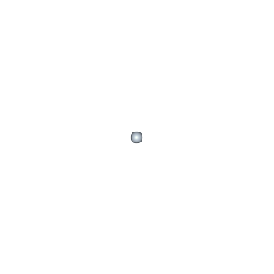
|
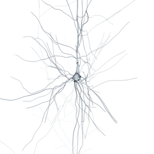
|
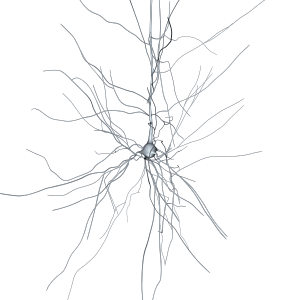
|
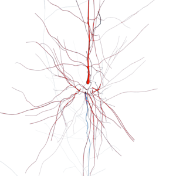
|
| Soma | Detailed | No axon | Skeleton only |
| Coloring schemes: How neurons are colored | |||
|---|---|---|---|
| Name | Description | Python value | CLI note( Command line interface name) |
| Solid | Use a single user given color. | ColorScheme.SOLID | R G B [A] |
| Random | Use a single random opaque color. | - | random |
| All random | Use a random color opaque for each neuron. | ColorScheme.RANDOM | all-random |
| Color by branch type | Color the dendrites and soma with one color and the axon with other. Unless two full RBGA tuples are provided, the default color for dendrites and soma is red and the axon color is blue. | ColorScheme.BY_BRANCH | by-branch [R G B A R G B A] |
| Width dependent alpha channel |
Blend between two colors based on the width of the neuron branches. The blend is a non-linear interpolation that tries to imitate translucency note( In fact the blend is a linear interpolation between the two colors using a = 1 - exp(-width * 1/attenuation) as the interpolation coefficient. The default attenuation is 2). The blended colors are computed from a primary and a secondary color. For zero width branches the color to use is the primary color. For infinite width branches the color is the secondary color. In practice, the non-linear blend guarantees that the secondary color is the color used for thick dendrites and the soma. The optional attenuation factor determines how quickly the color interpolation falls from the seconday to the primary color as a function of the width. It takes a real value >= 0 and if not provided defaults to 2. |
ColorScheme.BY_WIDTH | by-width[@attenuation] [R G B [A]] |
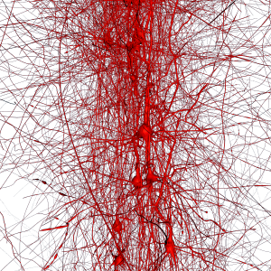
|
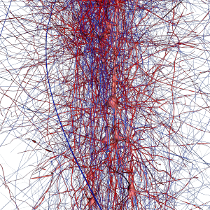
|
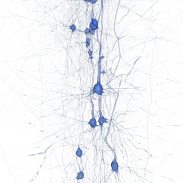
|
| Solid | Color by branch type | Width dependent alpha channel |
In the command line, neuron target properties are given to the -n, --neurons and --target after. The full specification is:
| options | = | [display_mode [coloring] ] |
| display_mode | = | soma | detailed | no_axon | skeleton | none |
| coloring | = | RGB[A] | by-branch | alpha-by-width[@attenuation] [RGB[A]] |
Regarding the coloring options, the solid coloring scheme is used if just an RGB[A] tuple is given. For alpha-by-width, if no optional primary color is given, (0, 0.5, 1.0, 0.0) will be used by default. The secondary color cannot be changed from the command line, instead it is computed as the primary color plus (0.5, 0.5, 0.5) added to the RGB channels, clamping each channel to 1.0; the A channel is set to 1. If no attenuation value is given, it defaults to 2.
From a scene object that handles a neuron target it is possible to change:
mode, the color scheme is color_scheme, the base color for the solid and by-width schemes is color or primary_color and the secondary color for by-width is secondary_color. The attribute values are those listed in the two tables above. Base colors are specified as lists with 3 or 4 float numbers in the range [0..1]. To change which is the maximum branch order of the sections that will be visible assign integer values to max_visible_branch_order, the special value -1 is reserved to mean that all sections are visible.For color schemes that accept additional parameters, these parameters can be provided assigning an additional AttributeMap to the attribute extra. In particular, alpha-by-width accepts the attribute attenuation to modify the equation that modulates the color interpolation.
Color maps are collected in an attribute called colormaps. This attribute is unset by default, implying that the colormaps are taken from the View object. This attribute can receive an AtributeMap in which different rtneuron.ColorMaps are assigned. In particular you can set color maps on the attributes compartments and spikes. When the attribute map is reset, the color maps are cleared. For more details about color maps see Color maps and Per object color maps.
After changes to the attribute map are made, they become effective after calling the update method of the handler.
For example, given a neuron target handler n the code to change the display mode to soma and paint it red the code would be:
For changing the color scheme to be by-width with an attenuation factor of 1.2
Synapse targets attributes can only be specified in the Python shell. This attributes can be passed to the functions that add synapses to the scene and can be modified later on using the scene object handler (modifying the values of rtneuron.Scene.Object.attributes). The available attributes are the radius, color and surface. The radius units are microns and the default value is 1. The default color is (1, 0.6, 0.2, 1) for afferent and (0.5, 0.2, 1.0, 1) for efferent synapses. The surface attribute toggles the positioning of the synapses on either the surface of the geometry or in the center. Note that the position of the synapses cannot be changed after they were added to the scene.
After changes to the attribute map are made, they become effective after calling the update method of the handler.
Two types of simulation reports are supported by RTNeuron: compartment reports from Bluron and spike time reports from Bluron or NEST. At the moment simulation data is a scene property and only one report of each type can be mapped to a scene at a given time.
Compartment reports are the main reports produced by the simulator. These reports contain scalar simulation values for the electrical compartments of the cell dendrites and somas (and a small portion of the axon). The values are mapped onto cells using an indexing scheme provided by the simulation.
preload(begin, end) from bbp.Compartment_Report_Reader, which will load in memory all the frames within the given time window. As of now, there is no way to access the reader created by rtneuron and attached to the scene, so the solution is to do the whole process manually.A typical voltage compartment report mapped onto cell membranes looks like the following picture:
Spike reports are a collection of pairs of spike times and neuron GIDs. This information is used to show how the action potential propagates along the axon. By default, the visual representation is an engrossment and color change from black to white that travels along the axon followed by a decay back to normal. The color map can be changed as described below. The action potential travels at a fixed propagation delay of 300 um/ms. The decay tail can be configured by the user. The following figure shows a spike at the beginning of the axon with 2 different spike tail lengths.
When a spike report has been loaded but no compartment report has been loaded, the spike data will be used to make somas flash when a spike occurs. By default, somas are rendered black (transparent is alpha blending is enabled) at resting state and they become white (and fully opaque) at spike times, gradually turning back into black during the spike tail time.
To specify a compartment report, use the command line option -r, --report. If no report with that name exists in the BlueConfig, or the report is not accessible, it will be ignored.
Spikes are enabled using the command line option -s, --spikes. If this option is provided, RTNeuron will query the content of the SpikesPath field of the blue config loaded and load the spikes from there. A path to a file can also be provided explicitly following -s/ For Bluron reports, the expected file extension is --spikes..dat. For NEST reports, the extension is .gdf and shell wildcards are also accepted (* and ?). Wildcards must be passed to RTNeuron and not interpreted by the shell, so if the path contains wildcards, the argument must be quoted in the command line invocation.
Using rtneuron.display_circuit, compartment and spike reports are loaded by passing the report name and the spike file name as the report and spikes arguments respectively.
From the console it is possible to change the reports being displayed at any moment. Reports can be assigned to scenes using rtneuron.Scene.setSimulation, which is overloaded to accept either a bbp.CompartmentReportReader or a bbp.SpikeReportReader object. To facilitate the process, the rtneuron module provides two helper functions:
rtneuron.apply_compartment_report(simulation, scene_or_view, report_name)
This function creates a compartment report reader for the given simulation and report name and attaches it to a scene or the scene associated with a view.
rtneuron.apply_spike_data(simulation_or_filename, scene_or_view)
This function creates a spike report reader for a file path or the spike data referenced by an simulation and attaches it to a scene or the view associated with a scene.
The Python shell has some predefined variables that can be used as input parameters for both functions (in your own scripts it is your responsibility to create them), see the description of the predefined variables for reference.
Simulation data readers can also be created and attached manually. See the BBPSDK reference for compartment and spike report readers.
With rtneuron, simulation playback is started automatically after the targets are loaded. Simulation is played back until the end and then stops. The time window of interest can be selected with the command line options --sim-window (-w) and the simulation speed with --sim-step. The actual interest window is computed as the intersection of the user given window and the information retrieved from the BlueConfig for the loaded report. For spike visualization, the user can select during how much time there must be a visual indication of a spike in the soma or along the axon, this time is the spike tail. In somas this indications is gradual color change from white (a spike just occurred) to black (no spike). On the axons, the spike leaves a trail as it travels the axon, the length depends on the spike tail time. The spike tail can be adjusted from the command line with the option. --spike-tail.
Finer control on playback is provided by the Python API. The object rtneuron.SimulationPlayer (app.player in the embedded shell) provides the interface to simulation playback. All parameters are controlled from there except toggling simulation display on and off, spike trails and color maps (see below), which are rtneuron.View attributes and properties. Refer to the reference manual or the interactive help for details.
Each view has two color maps to translate compartmental simulation values and spikes into colors. A color map is defined by a list of control points which maps discrete values to colors. For values that fall between two control points, the color assigned is a linear interpolation between the colors of the control points just above and below that value. Values above the maximum and below the minimum of the control points take the color of those control points respectively.
For compartment reports, the color map is sampled using the simulation values. For spike reports the color map is expected to be defined in the range 0 to 1. Given the current timestamp t and the time of a spike t_s, the value a = (t - t_s) / spike_tail is computed. That is the value used to sample the color map, clamped to [0, 1] if necessary.
The default color map for compartmental data has been crafted to display membrane voltage and is shown in the image below.
The color map can only be changed using the Python API. For that purpose there is a rtneuron.ColorMap class. This class has a method setPoints that takes a dictionary of (value, RGBA) pairs to define the control points (colors must always be 4-element tuples, i.e. the alpha value can't be omitted). Once the control points are established, they cannot be changed (only completely replaced).
Views handle color maps using an attribute called colormaps. This attribute is an AttributeMap itself and it contains two attributes. The first attribute is called compartments and it contains the rtneuron.ColorMap that is used to assign colors to compartmental simulation data. The second attribute is spikes and contains the colormap used to render spikes. You can modifiy the color maps directly or assign new ColorMaps to the mentioned attributes. It is an error trying to assign any other value different from a rtneuron.ColorMap to a colormap attribute. The view will detect any changes in the color maps and trigger the rendering automatically to show the new color map. The same color map can be assigned to multiple views. The color map is applied to render a rtneuron.View only when the display_simulation attribute of that view is set to on, otherwise, the target coloring attributes will be used.
The code below shows how to create a color map that goes from transparent black at -65 to opaque green at -40 and enable it in the predefined view:
The image below shows this color map compared to the default ones, with transparency enabled for both:
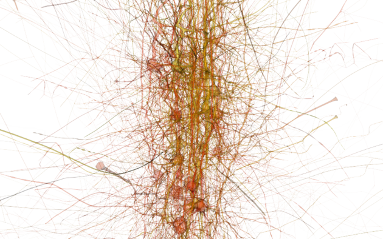
Default, voltages |
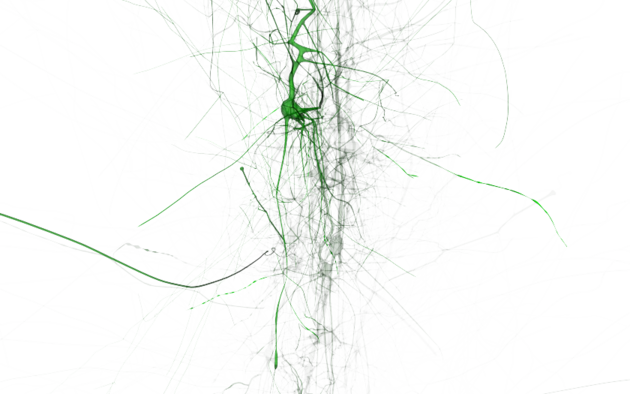
Black to green, voltages |
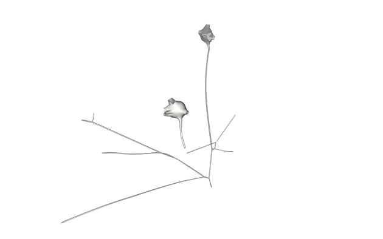
Default, spikes |
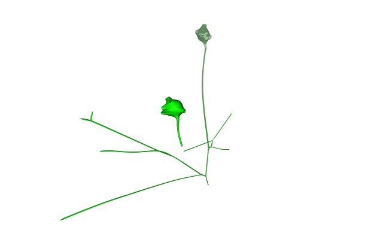
Black to green, spikes |
It is possible to modify the relative locations of the control points using setRange. This method sets the minimum and maximum values of the control points and adjusts the position of all the others preserving the relative distance between them (internally, this method is lightweight so it can be used to change the color map in interactively). The image below shows a simulation frame using the default color map and two range adjustments.
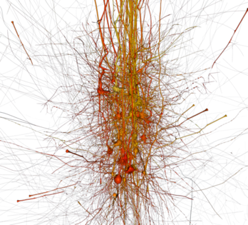
[-80, -10] |
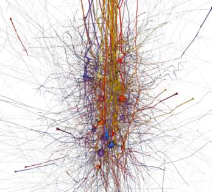
[-70, -40] |
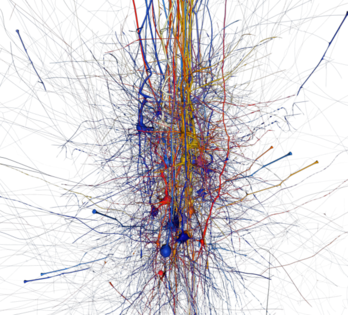
[-67, -48] |
All images with voltage data come from time stamp 6 ms of the allCompartments report of the test data. For spike data the time stamp 10 ms was used.
For compartmental simulation data and targets whose coloring scheme is by width* the alpha channel of the final colors are computed by multiplying the alpha channel from the color map and the branch width to color function explained in Neuron targets attributes. The image below shows a comparison of the same simulation frame with and without by width:
Regular transparency |
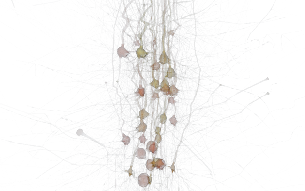
Alpha modulated by width |
Color maps for simulation can also be specified on a neuron object handler basis using the Python API. This is true for both the top level scene handlers and subhandlers obtained with rtneuron.Scene.Object.query. When a color map for compartmental data or spike activity is set at a handler, that color map overrides the color map from the view for the neurons contained by the handler. For temporary handlers the changes are persistent even after the handler is deleted.
To set a color map on a neuron object you have to first create an empty rtneuron.AttributeMap on the object attribute colormaps. This attribute map is analagous to the colormaps attribute of Views. To assign a color map for compartments set the ColorMap object on the attribute colormaps.compartments, and for spikes assign it to compartments.spikes
Changes on the color maps are tracked by neuron object handlers, however they only become effective once the update method of the handler is called. In the case there are neuron object handlers with overlapping neuron sets, the last one which was applied prevails.
Since it is not possible to remove attributes from an AttributeMap, the way to clear the color maps a subset of neurons is assigning (notice that there is no way of clearing a specific color map)
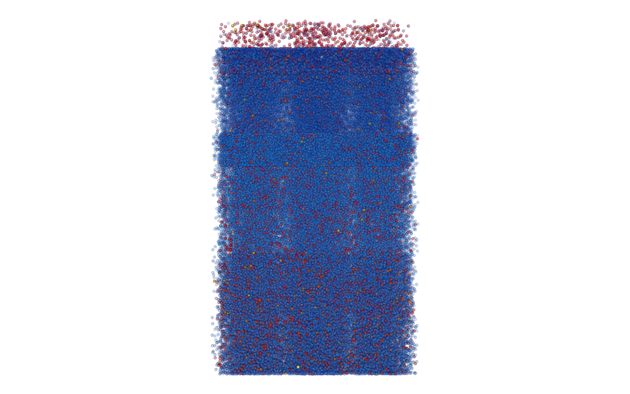
Default colormaps |
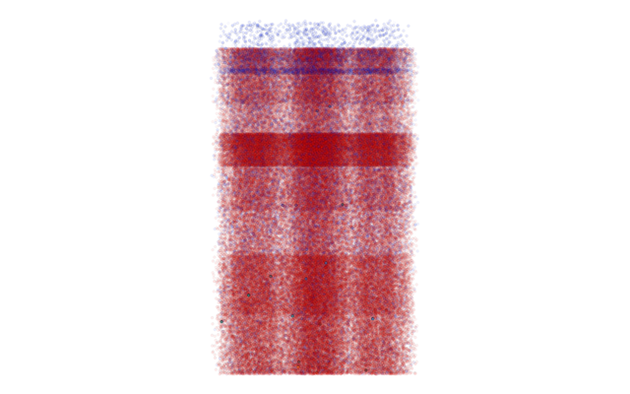
Different colormaps for inhibitory and excitatory |
Every rtneuron.View has an associated rtneuron.Camera which takes care of the projection type and parameters as well as the camera position and orientation.
The camera is created automatically for each view and cannot be replaced, but inside the Python shell there are methods to choose the projection type and camera position. Perspective projections can be specified using setProjectionFrustum and set with setProjectionPerspective. Orthographic projections are specified with setProjectionOrtho. The functions makeOrtho and makePerspective can be used to switch between the two projection types,the parameters of each projection type and handled independently, so they are preserved when switching between one and the other. The camera position can be changed using setView and setViewLookAt. The current view position and orientation can be recovered with getView, this function returns a tuple (position, (axis, angle)), where the angle is in degrees. Follow the links to the reference for further details.
The default projection comes from the default Equalizer configuration. It is a perspective projection with a vertical field of view of 53º approximately.
–no-cuda to work with orthographic projections.A camera path is a list of camera key frames (position, orientation and stereo correction factor) with a timestamp. Camera paths can be created and modified using the Python shell as well as loaded from and saved to files. When a camera is playing back a camera path, its position is updated frame by frame according to the playback parameters described below. This subsection describes how to create camera paths, how to play back camera paths from the command line as well as the Python shell is explained in Camera path manipulator.
Camera paths can be created by hand, writing camera path files in a text editor, but this is only recommended for camera paths with 1 or 2 key frames. For camera paths consisting of several key frames the best option is to build them inside the Python shell and then saving the result to a file. Camera paths are represented, saved and loaded using the CameraPath class.
A camera path is a collection of rtneuron.CameraPath.KeyFrame objects. A key frame specifies a position, orientation and stereo correction. Once created, key frames can be added to a camera path using addKeyFrame, which takes a timestamp in seconds and a key frame. An alternative method is to call addKeyFrame with a view as input parameter. In this case all the parameters are taken from the view and its camera:
Key frames can be queried, removed or replaced using their index in the path and the whole key frame list can be also extracted.
Camera paths can be saved and loaded using rtneuron.CameraPath.save and rtneuron.CameraPath.load.
Some predefined camera paths are already provided. These camera paths can be created using the functions found in the module rtneuron.util.camera.Paths**. The most relevant functions are:
rtneuron.util.camera.Paths.front_to_top_rotation(blue_config, targets, duration=10, **kwargs): Creates a camera path with front view to top view rotation as shown below:
rtneuron.util.camera.Paths.rotate_around(blue_config, targets, duration=10, **kwargs): Creates a camera path with a rotation around a target as shown below:
All the functions return a camera path, see the section on camera path manipulators to learn how to attach the camera path to a view. The functions make_front_view and make_top_view are different from the rest. These functions take a view as argument, and use it to inspect the scene attached to the view, create a key frame and apply it to the view (no camera path is created).
It is possible to record a camera path while the camera is manipulated interactively. For that purpose there is a helper object called CameraPathRecorder. This object takes an engine and view in its constructor. To start recording a camera path call startRecording. Each time a frame is issued, the current camera position will be registered in a camera path. Use stopRecording to stop registering and getCameraPath to retrieve the path. Notice that key frames are only registered when a frame is issued, so once you stop moving the camera no spurious key frames will be generated before you can save it.
A camera path file is a plain text file with a timestamp in milliseconds and key frame per line with the following format:
timestamp translation_x translation_y translation_z rotation_a rotation_b rotation_c rotation_d stereo_factorAll numbers are floating point numbers. The fields
rotation_(a,b,c,d) are a quaternion that specifies the camera orientation as a rotation from the default orientation (looking down the z axis and being y the up vector). Let a be the rotation angle in radians and x, y, z the rotation axis, the rotation fields are: sin(a/2)*x sin(a/2)*y sin(a/2)*x cos(a/2). The stereo_factor field is a multiplicative factor which is applied to the inter-ocular distance (More about stereo is discussed this section).
A camera path file looks like this:
0 4170 2329 1090 0.285096 0.568038 0.567425 0.523527 1 250 4125 2449 1083 0.275059 0.573701 0.573202 0.516378 1 500 4075 2567 1075 0.264962 0.579240 0.578855 0.509118 1
The python code to print a key frame in the format used by camera path files can be found below:
Camera manipulators are objects that handle frame, mouse and keyboard events note(Or even other devices in special cases) to modify the camera position and orientation. Each rtneuron.View contains a camera manipulator which is accessible by its property cameraManipulator. Manipulators can be replaced at any moment.
When a rtneuron.View is created a default camera manipulator is attached to it. This default manipulator emulates a trackball device with the mouse. The manipulator has an initial camera position and orientation and a reference point, these parameters are jointly known as the home position. Using the mouse it is possible to pan, travel and rotate the camera. For rotation move the mouse while pressing the left button, the camera will pivot on the reference point. For panning use the middle button, panning also moves the reference point for rotation. To move the camera back and forth use right button and move the mouse back and forth, the camera speed is proportional to distance to the reference point so, the closer to the point, the slower the camera moves. The camera and the reference point are reset to the home position when the space bar is pressed.
The keyboard can also be used to emulate the mouse. Use the cursor keys for camera panning. For rotations around the pivot point use they cursor keys with the Control key pressed. Use shift with the down and up cursors to move the camera back and forth.
If the scene attached to the view is updated, the home position is updated and the camera is reset to the initial position. The home position computed has the center of the circuit as the reference point, the y-axis as the up direction and places the camera along the z axis at a position where all somas fit in view. The auto update behaviour can be overridden setting the view attribute auto_compute_home_position to false. The home position can also be queried and changed manually in the Python shell with getHomePosition and setHomePosition.
There is a specific camera manipulator for camera paths, called rtneuron.CameraPathManipulator. This manipulator can be created and assigned to a view using the Python shell or initialized from the command line.
To load a camera path from the command line use the option –path path_file. This will create a camera manipulator that will be assigned to all views. Playback will start as soon as the scene shows up. By default, the camera path is played back using wall clock time, but if the option –path-fps fps is used, the camera path will advance 1/fps seconds each frame (regardless of the real rendering time).
When –path is used in combination with –grab-frames, the rendered frames will be recorded until the end of the camera path is reached (the rendering will continue looping, but no more frames will be recorded). Together with –path-fps and –frame-count, it is possible to record the exact frames needed to encode a movie of a camera path.
Within the Python shell the way to play back a camera path is to create a rtneuron.CameraPathManipulator object, assign the path to it with setPath and assign the manipulator to the cameraManipulator property of the target rtneuron.View. In a camera path manipulator it is possible to change the delay between camera path frames (wall clock or fixed), the playback start and stop time and the looping mode (swing, loop or no loop). Please see the rtneuron.CameraPathManipulator reference for further details.
Camera paths are played using spline interpolation for the camera position except for camera paths with only two key frames, in that case linear interpolation will be used (linear interpolation can be forced unconditionally setting the environmental variable RTNEURON_FORCE_LINEAR_PATH_INTERPOLATION to 1). For camera rotation, SLERP interpolation is always used in order to yield constant rotation velocity and minimal torque.
When RTNeuron is build with VRPN support it is possible to control the camera using a SpaceMouse device exported by a VRPN server. The folder where the server is set up will contain a vrpn.cfg file that holds the identifiers of the devices enabled by it. To configure the use of a SpaceMouse manipulator, this file must contain the line vrpn_3DConnection_XXX device_id, where XXX is the specific model of the SpaceMouse, e.g. vrpn_3DConnection_Navigator_for_Notebooks device0. Most devices are already present in the file and their configuration just needs to be uncommented. To start the server, execute vrpn_server and leave the process running.
The command line option –use-spacemouse device_name@host will enable the use of the SpaceMouse device as a camera manipulator, and specify the device name and host where it is located.
Inside the Python shell there is an object called rtneuron.VRPNManipulator. This object takes in its constructor the device type and a device URL device_name@host. To use it, instantiate the object using VRPNManipulator.DeviceType.SPACE_MOUSE as device type and assign it to a view.
Similarly to the way the default camera manipulator (Trackball manipulator) works, the SpaceMouse manipulator has a home position. Pushing and pulling the device cap in any direction is translated into panning and zooming in or out of the 3D scene view; tilting and twisting can be used to orbit around the 3D model. The camera speed is proportional to distance to the reference point. The camera and the reference point can be reset by pressing any of the two physical buttons on the device sides.
When RTNeuron is built with Wiimote support
note( This is not the case of the official packages
actually works is difficult to describe and OSG dependent.
) it is possible to control the camera using a Wiimote device exported by a VRPN server. In this case, the line to be added or uncommented is vrpn_WiiMote WiiMote0 1 0 0 1. The command line option –use-wiimote device_host@host is used for this purpose.
As in the SpaceMouse case, rtneuron.VRPNManipulator is used to create the camera manipulator for the Wiimote. Instantiate the object using VRPNManipulator.DeviceType.WIIMOTE as the first argument and the VRPN URL as the second one and assign it to a view.
In the case of the use of a Wiimote device, the camera can be manipulated by using exclusively the Nunchuk extension that can be attached to the main controller. By default, uniquely handling the main joystick will pan the camera, whereas using it in conjunction with the C button in the back of the controller will make it travel back and forth the z axis. On the other hand, if the joystick is handled while pressing the Z button below, the camera will rotate around the model.
It is possible to save the frames rendered by RTNeuron into files using both command line options and the Python interpreter. For the highest quality results the interpreter mode is advised because idle mode anti-aliasing does not work in combination with frame grabbing for the command line options.
In order to capture frames from the command line, use the option –grab-frames. This option will make RTNeuron dump a file per view and rendered frame from the moment the circuit is loaded and displayed. By default, the files are dumped into the working directory using file names like prefix_nnnnnn.png, where prefix is frame if there a single view or prefix_view_ if there are two or more views, being view the name of the view taken from the Equalizer configuration (the file format and common file prefix can be changed with –file-format and –file-prefix, the common file prefix can include an absolute path).
Frame recording will be finished in any of the following cases, whichever happens first (apart from engine exit):
–frame-count frames has been given, after frames frames have been rendered starting from the first frame in which the circuit is displayed. In this case, the engine will also exit automatically. This option is ignored when –shell is also present in the command line.Inside the Python interpreter (or a Python script) there are 3 methods to dump the content of views into files. One of them is using rtneuron.RTNeuron.record rtneuron.RecordingParams, the other two require direct manipulation of view objects.
The rtneuron.RTNeuron.record function takes an object with the recording parameters and triggers the generation and dumping of frames until one of the stop conditions is met. The recording parameters are given in a rtneuron.RecordingParams object. The parameters configure:
Please refer to the reference to find the actual names, types and units of the parameters.
When rtneuron.RTNeuron.record is called frame grabbing starts and frames are issued advancing the camera path and simulation time stamp automatically as required, until one of the stop criteria is met:
stopAtCameraPathEnd was set to true.Time intervals are open on the right (that means that from 0 to 1 s at 100 ms intervals, 10 frames will be rendered and not 11).
The function call is non-blocking, to wait for the last frame to be issued use rtneuron.RTNeuron.waitRecord. This is the best way to guarantee that all frames are generated when running from a script instead of the interactive console.
This method does not considered the existence of several views. Despite frames will be dumped for all views, the file names used will collide, so the view from which frames are finally saved is undefined.
A rtneuron.View object has two methods related to frame grabbing:
snapshot_at_idle), for this reason this is the recommended methods for production quality image generation. The file name used must include the extension, any file format supported by OpenSceneGraph will be accepted, for unsupported file formats an error message will be printed. In multichannel configurations, this method will only work on the first destination channel by default. If you want to capture a snapshot of all channels, add "%c" to the output file name. That string will be replaced by the channel name in order to generate one file per channel.prefix_nnnnnn.png, where prefix is the name of the view and nnnnnn is the frame number (if the name of the view in the Equalizer configuration is empty, "frame" will be used by default). The frame counter is reset to 0 every time record is enabled. The file name prefix and image file format of the image files generated can be configured modifying the view attributes output_file_prefix and output_file_format, when output_file_prefix is an empty string, the default prefix described before is used instead. 1.8.11